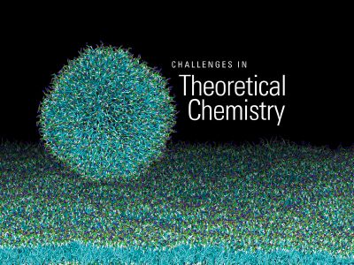

Galería Oficial LAMMPS1. ¿Qué es LAMMPS?
Simulador clásico de Dinámica Molecular (MD) de código abierto, creado por Sandia National Laboratories para clústeres de memoria distribuida.
- Multiescala: Modela átomos, polímeros, proteínas, metales y sistemas granulares.
- Modular: +1,000 potenciales de fuerza (Lennard-Jones, EAM, ReaxFF, ML-IAP).